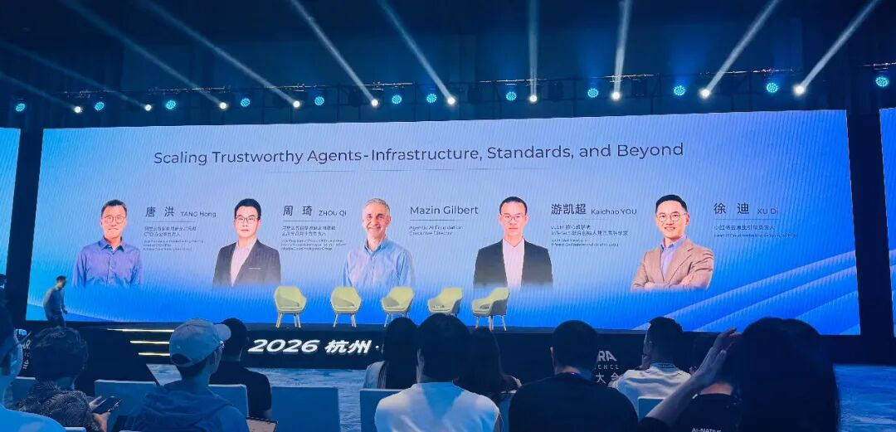
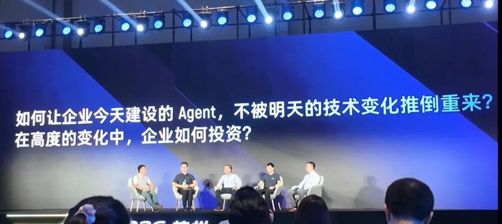
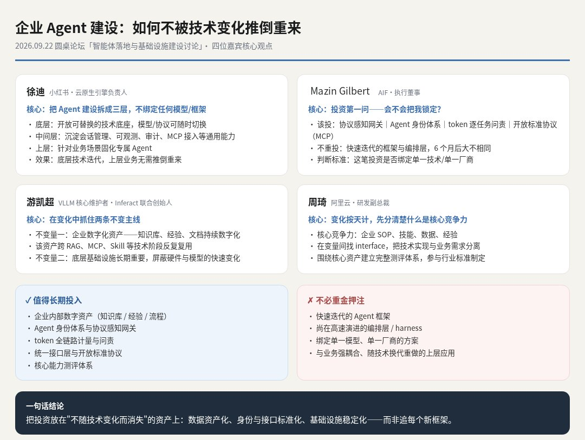

这两天去参加了阿里的云栖大会，这是我第一次去，感觉还是很震撼的。
大会组织得非常好：三天会期，将近 120 场论坛分享，干货满满。
展馆分了四个，分别对应 AI 算力、智能、创造、产业四个方向。现场有各种打卡和游戏，逛完三天，收获很多，也不觉得无聊。
参加了多场论坛，其中一场的圆桌话题让我非常感兴趣，现场专家也讲得很好。这是本次论坛的几位专家。

这场论坛的话题是：如何让企业今天建设的 Agent 不被明天的技术变化推倒重来？

先简单总结一下每位专家的观点。

结合专家们的观点，我想进一步谈一个话题：《服务器买了，Agent 建了：下一代 AI 来了怎么办？》。
我们在帮企业做 AI 转型落地时，本地化部署是一个绕不开的话题。
但真正动手做的时候，经常会遇到同一个问题：硬件到底怎么买，才能在模型不断升级时不被淘汰，不用推倒重来？
服务器买了，本地模型部署了，知识库整理了，几个 Agent 也终于上线了。
但项目刚验收，新的变化就来了：更强的模型发布，开发框架更新，过去需要定制的功能，变成了新产品里的一个按钮。
企业难免会问：
今天花钱建设的这套系统，明年还值不值钱？
这份担心，值得在采购之前就认真讨论。
没有谁能保证一套 AI 系统永远先进。但企业可以提前决定：技术升级时，哪些部分允许替换，哪些积累必须留下。
一、先想清楚：一次 AI 建设，究竟要留下什么？
以采购审核为例。
企业希望 Agent 阅读采购申请、查询供应商资料、对照内部制度，最后给出问题清单和处理建议。
为了完成这项工作，企业实际上投入了三类资源：
| 投入 | 当下的用途 | 应该持续留下的价值 |
|---|---|---|
| 数据 | 让 AI 找到资料、理解业务 | 可信资料、业务定义、权限与维护机制 |
| 软件 | 让 AI 查询系统、执行流程 | 可复用接口、业务规则和操作记录 |
| 算力 | 支撑模型和相关服务运行 | 在合理成本下持续处理业务的能力 |
如果这些东西全部绑定在一个模型、一套平台里，更换技术就可能牵动整套系统。
如果它们有清晰的边界，升级时就有机会只改动其中一部分。
后面几节，我们先依次看数据、软件、算力这三类资源该怎么留，再补上一项容易被忽略的资产，最后把它变成采购和验收时的具体要求。
保护 AI 投入，首先要明确哪些成果归企业掌握，并且能够被下一套技术继续使用。
二、数据：把文件变成下一代模型也能用的业务资产
知识库建设最容易看见的成果，是上传了多少份文件。
但文件数量并不能说明 AI 是否真正具备了可靠的业务依据。
仍以采购审核为例：
- 同一项制度有三个版本，哪一版有效？
- 同一家供应商在不同系统里名称不同，怎样确认身份？
- 哪些材料普通员工可以看，哪些只能由审核人员访问？
这些问题，换一个更强的模型也未必能解决。企业需要先把信息之间的矛盾和边界梳理清楚。
因此，整理知识时，至少应该留下三层内容：
第一层是原始资料。保留原文、来源和必要的历史版本，便于追溯与重新处理。
第二层是业务含义。说明制度何时生效、适用于谁，以及客户、合同、订单、供应商之间的关系。
第三层是维护规则。明确谁负责更新、谁可以访问、内容失效后如何处理。
以后更换检索技术，索引可能需要重建；更换模型，提示词可能需要调整。但已经确认过的制度版本、业务关系和权限规则，仍然有用。
值得长期积累的数据资产，是下一套系统接手时，企业不必再解释一遍的业务知识。
三、软件：让更换模型的影响，停留在有限范围内
采购审核 Agent 今天用一个模型理解合同，明天换另一个模型，本身并不可怕。
真正昂贵的是：换模型时，还要重新连接采购系统、重新配置员工权限、重新开发审批流程，再让业务人员解释一遍工作规则。
要减少这种重复，建设时就应该把业务操作做成可复用的能力。
例如：
- 查询供应商资料。
- 读取合同与采购申请。
- 校验预算和授权额度。
- 提交审批并查询处理状态。
这些操作需要明确的输入、输出、权限和失败处理方式。
模型负责理解任务、选择操作、组织结果；业务系统负责校验权限、执行操作和记录状态。
例如，Agent 可以提出“这笔采购需要补充审批”。但谁有权提交、交给谁处理、能否重复提交，应由明确的系统规则控制。
这样，更换模型时，已有的系统连接和业务控制才有机会保留。
同时，也要避免为了“适应未来”，提前建设一个过于复杂的平台。Anthropic 的 Agent 构建实践建议，从能解决问题的简单方案开始，确有需要时再增加复杂度。
先让一个场景稳定运行，再逐步提取可复用能力，通常更容易看清每一笔投入的价值。
四、算力：能跑模型，只是硬件验收的起点
本地化部署的讨论，很容易落到设备清单上：
什么显卡、多大显存、能运行多少参数的模型？
这些参数很重要，但还需要进一步回答：
这套设备每天能完成多少件合格的工作？
一个人演示合同审核，与几十个人同时处理长文档，对系统的要求不同。
一个 Agent 完成一次任务，也可能多次调用模型、检索资料和执行工具。一次用户提问，并不一定只对应一次模型计算。
采购前，先用真实业务测容量
至少需要明确四件事：
- 并发量：高峰时有多少任务同时进入？
- 任务规模：文档有多长，需要处理哪些类型的内容？
- 响应要求：哪些任务必须实时完成，哪些可以排队？
- 合格标准：完成后，还需要多少人工修改和复核？
设备表现也受部署配置影响。NVIDIA 的推理服务文档展示了批处理、并发实例等配置对吞吐量和延迟的影响。因此，设备参数之外，还需要实际测试。
本地化边界，决定算力怎么配
数据存储、知识检索、模型推理、日志和备份，哪些必须留在企业内部，需要分别说清楚。
文件存在本地，不代表 AI 处理过程也在本地。
如果检索出的内容发送给外部模型，数据依然离开了企业环境。边界不清楚，硬件采购就可能建立在错误假设上。
给旧设备安排工作，也要算经济账
未来更换主模型时，已有设备可能继续承担文档解析、检索、小模型推理或批量任务。
但这些用途需要验证兼容性、性能和成本。
设备能继续开机，不代表继续使用就划算。电力、维护和运维成本，同样要纳入判断。
算力投资的目标，是在合理成本下持续完成业务。企业可以为扩展留空间，也可以按实际需求分阶段投入。
五、还有一项关键资产：企业自己的“考试题”
有了数据、软件和算力，企业还需要知道：下一次升级，到底有没有变好？
如果没有稳定的评判方法，每次出现新模型，都只能重新听演示、凭体验比较。
更可靠的做法，是把真实工作中的典型问题、异常情况和历史错误，逐步整理成测试案例。
对于采购审核，可以持续检查：
| 维度 | 要验证的问题 |
|---|---|
| 业务质量 | 关键风险有没有漏掉？结论有没有依据？ |
| 权限边界 | 是否访问了不该看的材料，执行了不该做的操作？ |
| 人工负担 | 结果需要多少次修改，复核要花多久？ |
| 运行成本 | 完成一项合格任务，实际花了多少时间和费用？ |
OpenAI 的评测指南也强调，升级或尝试新模型时，需要检验输出是否符合实际要求。
这套案例积累得越充分，企业越能够独立判断新技术的价值。
升级可以先测试、小范围试用，再逐步扩大；发现问题，也能够回退。
企业不仅要积累“怎样让 AI 做事”，还要积累“怎样判断它做对了”。
六、把未来能否升级，变成今天的验收要求
采购和验收时，可以要求建设方具体回答五个问题：
- 换模型：哪些功能可以继续用，哪些需要修改？
- 换平台：数据、配置和运行记录能否完整导出，并被其他系统使用？
- 守边界：权限和审批规则，是否由模型之外的系统执行？
- 验效果：新旧版本如何比较，出现问题如何回退？
- 用设备：现有硬件如何扩容、迁移或调整用途，受什么条件限制？
条件允许时，还可以做一次小范围的模型替换演练。
不要求整个过程毫无修改，而是看清楚：改动在哪里、需要多少工作、依赖谁来完成。
“支持未来升级”是一句承诺，能够展示替换过程，才是可以判断的交付能力。
企业也不必因此无限等待。
一个范围明确的场景，只要能够产生可验证的收益，就值得开始。同时，把数据、接口、规则和验收依据留下来。
未来的新技术到来时，企业应该能够清楚地说：
这部分实现可以换掉，这部分经验可以继续用，这部分设备仍有合适的工作。
模型会更新，硬件会折旧。但企业对业务的理解、连接系统的能力，以及判断工作是否合格的标准，可以越积累越有价值。
今天的 AI 项目，既要交付可用的系统，也要为下一次升级留下可继承的资产。
感谢阅读，我是 Zero，一个拥抱 AI 时代的实践者。
原文首发于公众号「忙而不匆1802」：服务器买了，Agent 建了：下一代 AI 来了怎么办？